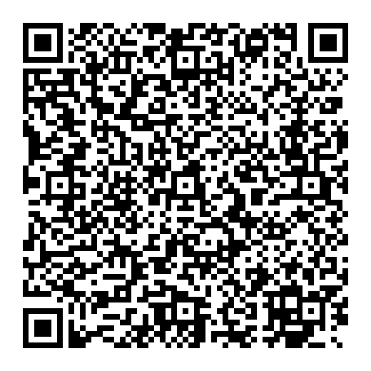

Todoist for the R1
Scan with your R1: creations card → “add via QR code”.

- Uninstall an older Todoist card first (the R1 caches the install URL).
- Scan the code and open the card.
- In setup, type your API token (Todoist → Settings → Integrations → Developer), tap “Test”, then “Save”.
- No token yet? “Try the demo”. Setup later: hold the screen for about 1 s.
Your token is never part of the QR code or any URL. It stays on your R1.